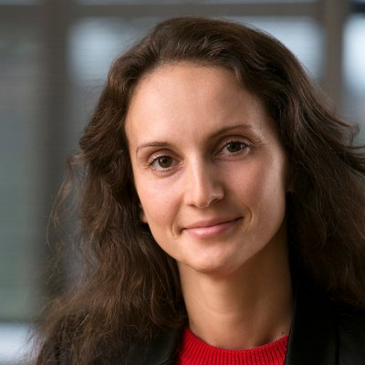
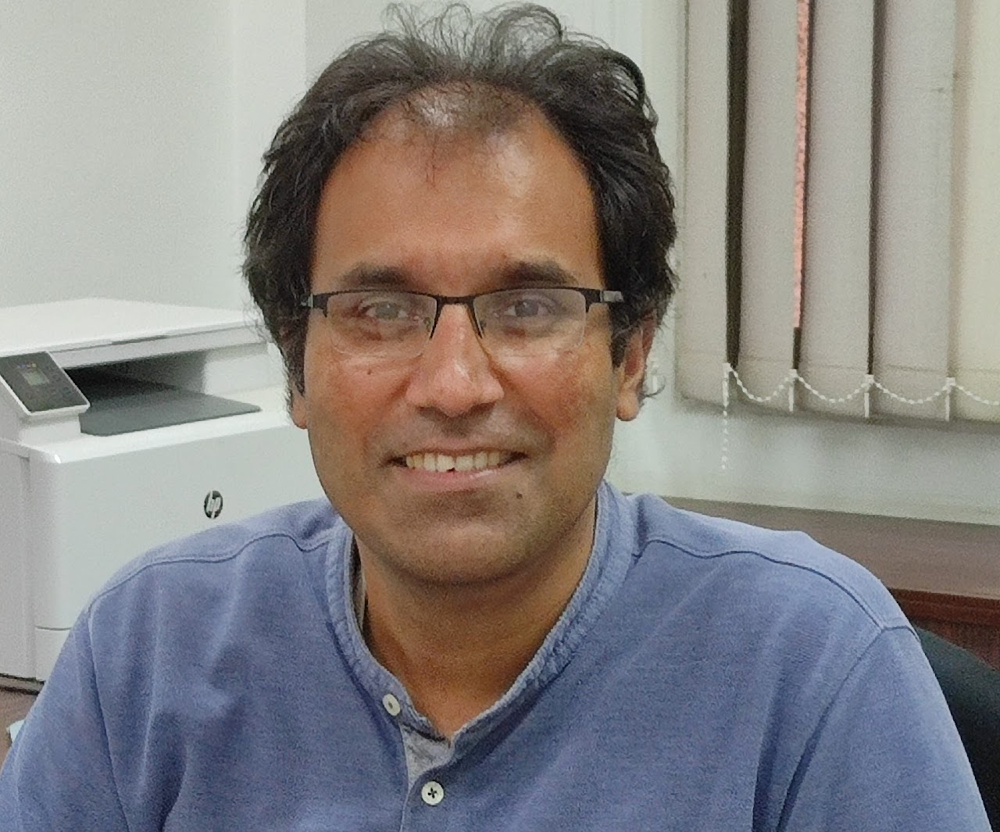
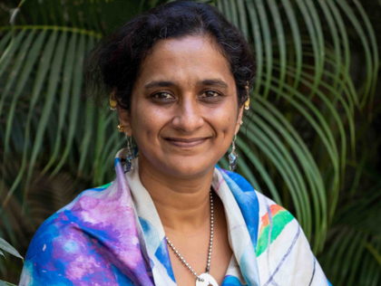

[ Acknowledgements ]
Mentors
The scientists who trained me and whose labs I've worked in, from Pune to Sydney.

Dr. Svetlana Postnova
Associate Professor
University of Sydney · Sydney
Computational neuroscience · Chronophysics · Chronobiology
Dr. Angela D'Rozario
Associate Professor
Woolcock Institute of Medical Research · Sydney
Dr. Susmita Roy
Associate Professor
IISER Kolkata · Kolkata
Computational biology · Machine learning · Protein evolution

Dr. Jeet Kalia
Professor
IISER Bhopal · Bhopal
Chemical biology · Ion channels · Protein engineering

Dr. Suhita Nadkarni
Associate Professor
IISER Pune · Pune
Computational neuroscience · Mathematical modelling · Synaptic plasticity
Dr. Khushhali M Pandey
Associate Professor
MANIT · Bhopal
Bioinformatics · Computational biology · Drug discovery
Dr. Swapnil Gaikwad
Assistant Professor
Dr. D.Y. Patil Biotech & Bioinformatics Institute · Pune
Biotechnology · Nano-biotechnology · Nanoparticles
Dr. Rajesh Gupta
Associate Professor
Dr. D.Y. Patil Biotech & Bioinformatics Institute · Pune
Biochemistry · Immunology · Glycobiology